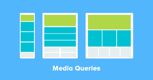

MEDIA AQUARE
Media Queries Es una regla o conjunto de reglas que se introducen en una hoja de estilo CSS con el objetivo de definir propiedades específicas para distintos tipos de medios. Con una media queries podemos especificar el ancho y el alto de un contenido, de manera que este se adapte a los límites de una impresora sin tener que cambiar el contenido original La media queries son fundamentales en el diseño web, ya que son la base del diseño adaptable. Esto significa que con una misma maquetación HTML, nuestro diseño se adaptará a diferentes dispositivos y tipos de pantalla. En el primer ejemplo, el color del fondo será rojo solo si el ancho de la pantalla es inferior a 800 píxeles:
MEDIDAS PARA EL SEO
Posicionamiento web, posicionamiento en buscadores o posicionamiento SEO se refiere a las técnicas para que una página web aparezca en las primeras posiciones de los resultados en buscadores (como Google) para una serie de palabras o frases. Posicionamiento web natural u orgánico Posicionamiento natural se refiere a las técnicas de posicionamiento web que tienen que ver con los contenidos de la misma (títulos, metas, palabras clave, ...), con los enlaces dirigidos a la página web y con la calidad del código, en contraposición a las campañas de posicionamiento web de pago por click (Google Adwords, Yahoo! Search Marketing, ...), en las que pagas directamente a los buscadores para aparecer como un enlace patrocinado.
.jpg)